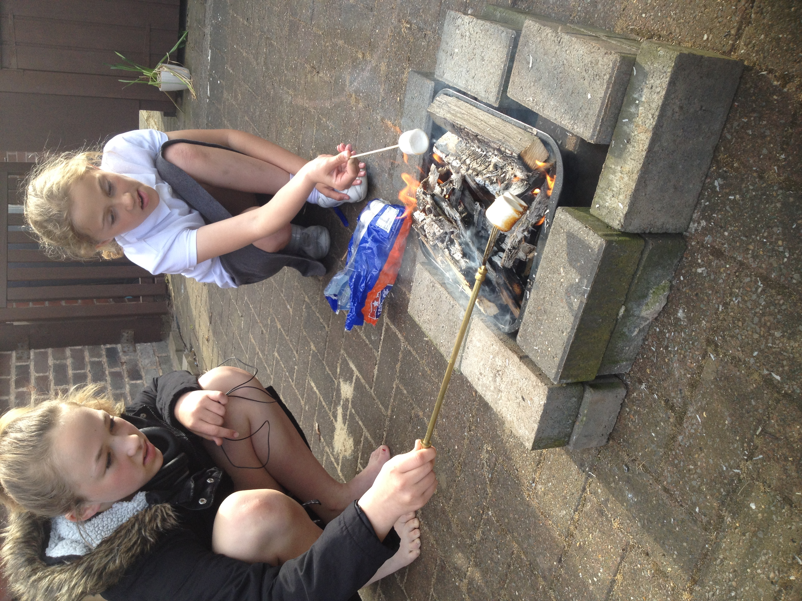
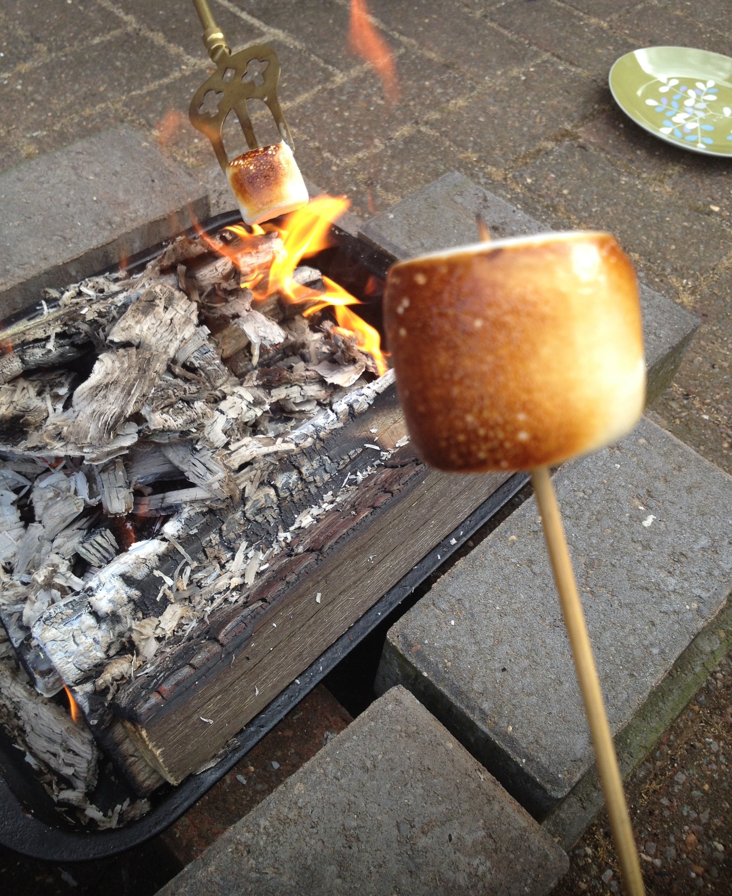
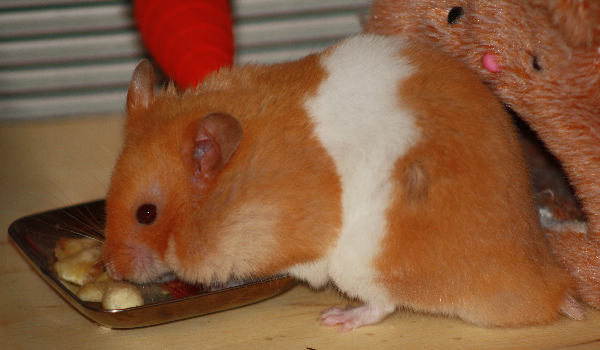

Marshmallows toasting on an open fire.
15-Jun-2017 | Milku
Smoke and ash getting in your eyes.
It's Day 15 of 30 Days Wild. The half way point.
My humans finally found a use for my old bedding…as kindling for a camp fire. They claimed they’d used the unsoiled wood chips that they’d cleaned out of my cage, but were they really sure!

Anyway, they piled up some wood and kindling in the garden and found a little flint fire starter to generate sparks. They do have the wherewithal to start a fire using a couple of bits of wood, but the craving for toasted marshmallows was too great and they wanted to be sure of getting a flame.
They told me that they are great fire starters, having successfully lit fires without the aid of matches several times before. They do enjoy the bushcraft sessions they manage to join at different places. And, of course, their Dad likes to take them camping too.
With a good fire burning, they gathered some giant marshmallows and sticks of various sorts. One preferred to use the toasting fork that they’ve got if they ever light a fire in their fire place. Another liked using skewers. And the third favoured a green wood stick cut from the hazel tree growing in the garden.
 It was smoky, but they managed to toast lots of marshmallows and scoffed the lot. Not even a tiny scrap for their favourite hamster! They just picked some parsley for me while they were sitting out in the garden. Doesn’t seem fair really.
